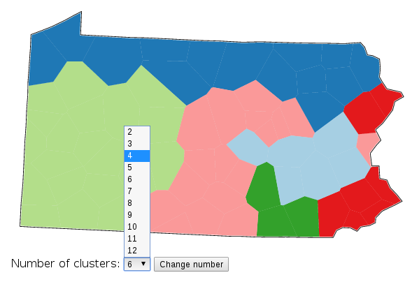
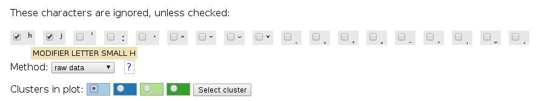
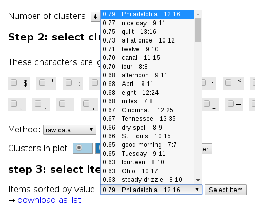
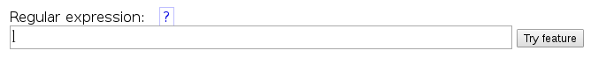
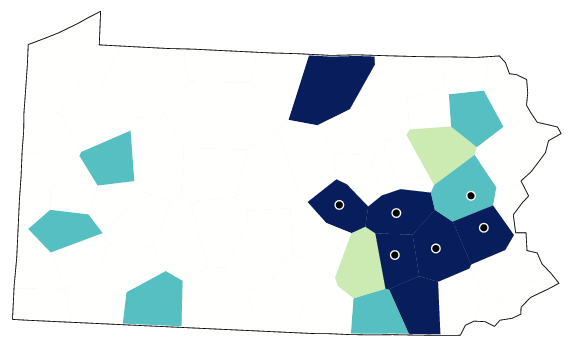
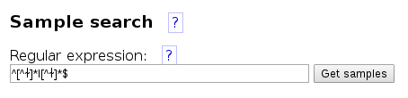
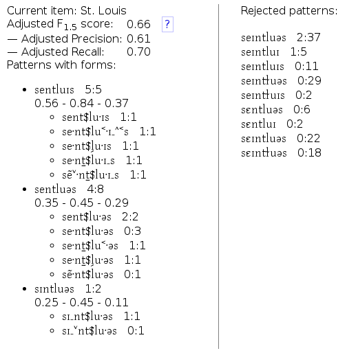
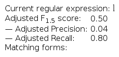

You also get a distribution map for the relevant variants. De locations belonging to the selected area are marked with a dot:
This distribution map matches quite well with the light blue area:
Let's reduce the number of clusters to four:

At this stage, you also choose what special characters should be included in the search for relevant patterns. Usually, diacritics are ignored because they introduce too much detail, hiding the more global features. (Characters known to be vowels, semi-vowels or consonants are used always.) However, some diacritics may be needed to be able to find important distinctions. For instance, if you expect there may be a contrast of t (non-aspirated t) versus tʰ (aspirated t), you should check the box for ʰ.
Some diacritics can be hard to recognise. To help you, if you move your mouse over it, you get to see the official Unicode name of the character, for instance MODIFIER LETTER SMALL H for ʰ.

Our data for Pennsylvania doesn't have special characters for aspiration. The special characters it does have are shown below.
Don't select any special characters. Just pick the light blue area:
After each word there are two numbers. The second number is how many instances of the word were found to be relevant. The first number is how many of these were actually in the selected area.
Let's pick the first word, Philadelphia.

You also get a distribution map for the relevant variants. De locations belonging to the selected area are marked with a dot:
This distribution map matches quite well with the light blue area:
Compare the matching patterns with the rejected patterns. How are they different? The relevant patterns have l where other patterns have ɫ. So lets see what that gives us:

It's not quite OK. There are too many variants, in a larger area than the initial match:

This is identical to the list of variants we started with, and the distribution map is identical too:

Try the next word on the list with an 'l', quilt:
In data overview, go to Sample search:
Enter a search pattern that has at least one l, and no ɫ at all:

You can see that l is quite dominant in the target area, but occurs quite often in all other areas as well.
You also get a random list of matching words:
Keep trying, and you come to St. Louis, the first word that shows different results.
All matching words have l, not ɫ, but many rejected patterns have l as well:

